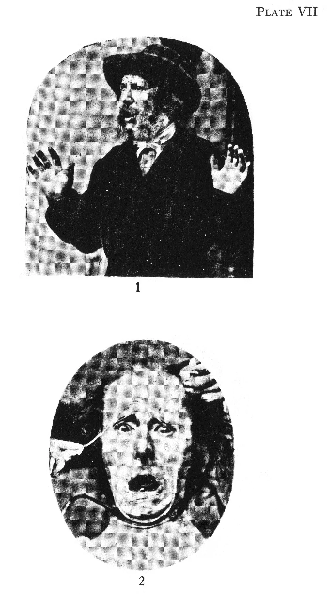
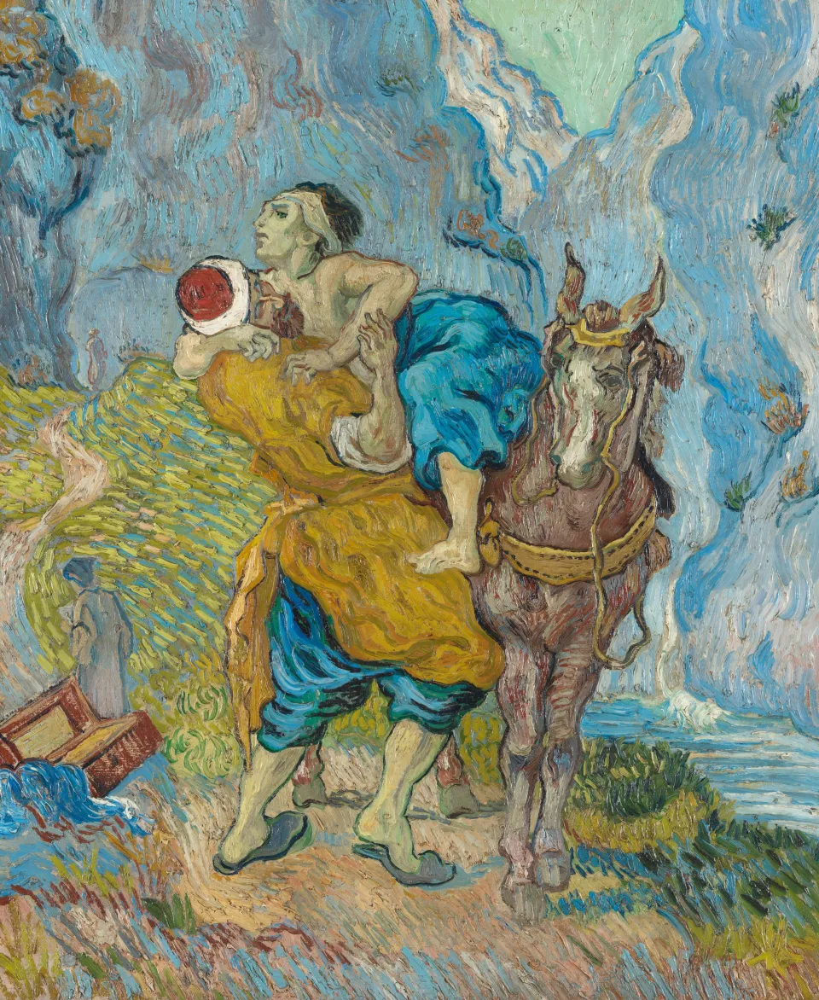
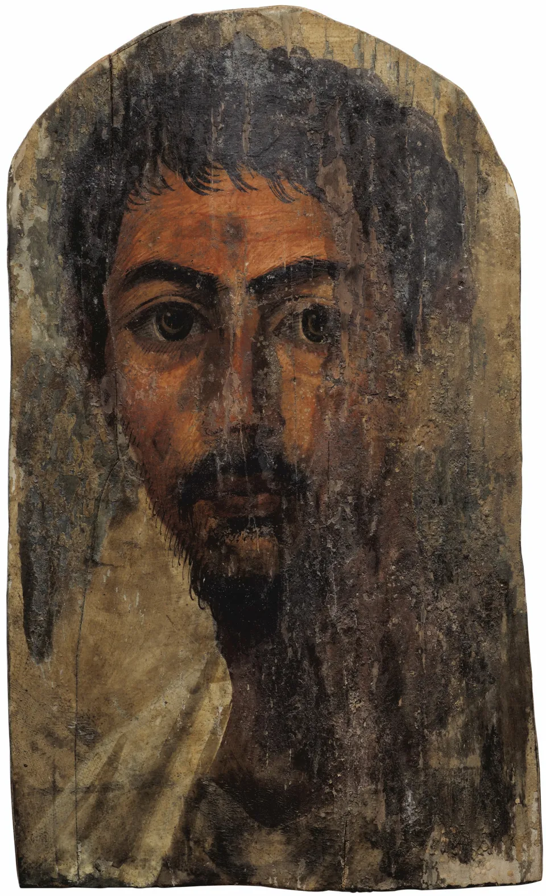

An old complaint, with a borrowed author
The complaint about children loving luxury and disrespecting their elders often gets assigned to Socrates. Its wording comes from a book published in 1907.
In Kenneth John Freeman's Schools of Hellas (1907), page 74, it is his summary of complaints about ancient Greek children. It is Freeman's wording, not a quotation from Socrates.
Predictions of disaster need the same care. A dated prophecy, a misunderstood calendar and a danger people work to avert need different kinds of evidence. A catalogue of failures cannot establish that the next danger is harmless.
Open the disaster almanac
The doomsday almanac
interactiveFour disaster expectations with different reasons and outcomes. Select a date. Entries are evenly spaced, without a time scale.
The source links support each case. They do not form a probability estimate for future disaster.
An old body, a particular life
An old painting can make fear or tenderness recognizable. It cannot establish that everyone feels the same amount, in the same way.
A defensive response is only part of fear. Neuroscientist Joseph LeDoux distinguishes what animal experiments reveal about responses to danger from what they can establish about subjective feeling. Similar biology leaves the subjective experience unanswered.
Pleasantness and arousal describe aspects of feeling. Lisa Feldman Barrett's theory of constructed emotion gives concepts and context an important role. It is one theoretical account, with no undisputed final count of the human feelings.

Explore a two-dimensional illustration
One map of feeling
interactiveDrag the dot, or choose a word using the map or menu. This illustration uses pleasantness and arousal, two dimensions used in some theories of affect.
content
Word positions are chosen for this page. The nearest label is illustrative, with no measured score or diagnosis.
Getting used to things has limits
The new house becomes the house. A pleasure loses its novelty. Does that mean we eventually return to where we began, whatever happens?
The famous 1978 lottery study does not show that journey. Researchers interviewed 22 lottery winners, 22 controls and 29 people with spinal-cord injuries once. Winners' current happiness was not significantly different from the controls'; their enjoyment of ordinary pleasures was lower. The injured group reported lower current happiness. Nobody's happiness had been measured before the event. The study compared people; it did not track their return to an earlier level.
A 2006 review argued that this treadmill account needed revision. Studies tracking people through marriage, widowhood and unemployment found differences in adaptation and lasting changes in well-being. Their averages cannot give an individual a recovery timetable.
A larger Swedish lottery study found a lasting effect of wealth. Prize amounts were randomly assigned within lottery groups. Survey responses 5 to 22 years later showed a lasting improvement in life satisfaction with larger wins. Estimated effects on happiness and mental health were smaller and not statistically distinguishable from zero. Satisfaction with life as a whole differed from reported happiness.
Compare three schematic adaptation paths
Three possible adaptation patterns
interactiveSelect a schematic pattern. These curves illustrate possibilities, with invented heights and rates. They predict no event, person or recovery time.
Money matters. The question matters too.
A herder can value his life highly without owning the things a wealthy American owns. Similar ratings would still leave us far short of showing equal inner lives.
The original Forbes study received answers from 49 wealthy respondents and 62 comparison respondents. The wealthy group reported higher average well-being. A later study of 127 Maasai participants, interviewed orally in Kenya, found generally positive life satisfaction. Their samples, questions and settings make a direct comparison difficult.
A 2023 reanalysis of smartphone reports from 33,391 employed US adults found that daily emotional well-being rose with the logarithm of household income for most participants. Flattening above roughly $100,000 appeared among the least happy fifth. The overall association was small. This self-selected sample and its correlations cannot tell you what a raise would do to you.
Household income differs from wealth in assets. The findings leave room for misery among the rich, but undermine a universal claim that the rich and the comfortable are equally happy.
Read the Forbes and Maasai comparison carefully
The often-repeated pair, 5.8 for the Forbes group and 5.7 for the Maasai, appears in a 2004 review, Table 1. It combines separate studies. It is not a single survey of all 400 wealthy people and a matched group of herders.
| Review entry | Reported mean | What needs care |
|---|---|---|
| Forbes 400 | 5.8 | The original wealthy sample had 49 respondents. Its 5.82 is a seven-point rating of happiness, separate from a life-satisfaction question. |
| Maasai | 5.7 | The review cites an unpublished 2003 source. The published 2005 paper instead reports 5.4 on the five-item life-satisfaction scale. The discrepancy is unresolved here. |
Even identical means would not show identical inner lives. Different questions, translations, recruitment and populations limit the comparison. “People with almost nothing” also mistakes low cash income for an absence of cattle, relationships or a valued way of life.
Try a logarithmic income axis
What a logarithmic income axis means
interactiveMove the slider through six doublings of an example annual household income. Equal distances represent equal proportional changes. This is arithmetic, with no predicted happiness score.
Doubling $20,000 to $40,000 takes the same space as doubling $80,000 to $160,000. Equal space does not mean an equal effect on well-being.
What was handed to you
You did not choose your parents or your childhood. You do make choices now, including how you treat people. Much sits between the two.
Health, work and the place you live can limit your choices. Other people's choices can alter yours. Genes and upbringing do not take fixed shares of a life, leaving generosity everything left over.
Decorative markers, with no measured size or weight. These influences overlap.
Given the room I have, what am I going to do for another person? I want to keep that question without making kindness the only choice that matters.
Other people matter
Relationships belong in the evidence about living well. They also matter for reasons that a happiness score cannot settle.
A 2010 review combined 148 prospective studies of social relationships and mortality. Stronger relationships were associated with better survival. These were observational studies, with varying measures and adjustments. They support taking connection seriously, without assigning each lonely person an equivalent number of cigarettes.
In a 2008 experiment, 46 participants were randomly assigned $5 or $20 to spend on themselves or on others. Those assigned to spend on others reported greater happiness that evening, controlling for their morning rating. It measured one evening's happiness, without establishing lasting benefits or testing pure motives.
Alcoholics Anonymous makes a moral claim in chapter 5 of its Big Book: self-centeredness is at the root of the troubles it describes. I take it as an instruction, rather than a diagnosis of everyone's suffering.

The traveler still needs lifting. That is the part of the old advice I want to keep, even without a promise of personal reward.
Similar advice, different texts
Matthew asks us to do for others what we want done for ourselves. Hillel and Confucius warn against doing what we would hate to receive. The Dhammapada applies comparison with ourselves to violence. There is a family resemblance.
Action and restraint ask different things of us. A brother, a neighbor and every creature can be different circles of concern. The traditions give the advice different reasons and place it beside different obligations.
The selector compares passages through labeled paraphrases and English sources. Similar wording alone cannot establish independent invention, borrowing, or agreement between whole traditions.
Compare twelve passages
Related advice in twelve traditions
interactiveSelect a tradition to read a plain-English paraphrase, its text location and an English source. These are related instructions, not interchangeable quotations or a claim of independent invention.
Some ask for action; some forbid harm; some ask you to share another person's good fortune or loss. Their surrounding arguments and the people or creatures they include also differ.

The title comes from Ecclesiastes 1:9. For me, it is a reminder that the world did not begin with my worries. It gives me no measurement of another person's feelings.
Treating another person with care remains something I want to do. What that person needs may differ from what I would want in their place. The old instruction still leaves that question open.
Sources and methods
Open the research notes
These notes describe the methods behind the claims above.
- 1978 lottery and injury study. Small, one-time interviews, with retrospective and anticipated ratings. The injury sample differed in age and recruitment. It cannot measure a pre-event baseline or long-term recovery. Original paper.
- Adaptation review. Diener, Lucas and Scollon (2006) review earlier research and propose changes to set-point theory. Their synthesis is not a new randomized trial. Original review.
- Swedish lottery evidence. The 2018 working-paper version, later published in 2020, reports 3,362 respondents and a 69 percent response rate. Within-lottery randomization supports a causal estimate of prize size for these players. It does not make them a random sample of all people or establish effects of losing money. Full working paper.
- Wealth and culture. The Forbes survey was mailed to 100 addressable members of the 1983 list, with 49 responses. The later Maasai sample used word-of-mouth recruitment, trained translators and a five-item life-satisfaction scale. Neither supports an individual prediction. Forbes paper; Maasai paper; Diener's own 2005 warning about the comparison.
- Income and daily feeling. The 2023 collaboration reanalyzed reports collected in 2009 to 2015 from employed adults aged 18 to 65. Its quantile results describe different parts of the well-being distribution. The roughly $100,000 point is not a present-day universal threshold. Full paper.
- Connection and survival. The 2010 meta-analysis includes 308,849 participants. The combined odds ratio for survival was 1.50 for stronger versus weaker social relationships. That is not “50 percent longer life,” an individual probability, or a loneliness-only estimate. Full review.
- Spending on others. The 2008 paper also includes observational studies; the main text here describes its randomized experiment. The outcome was self-reported happiness that evening, not mortality or durable recovery. Full paper.
- Texts and illustrations. The almanac and tradition selector link their sources on each card. Religious paraphrases are this page's wording, not new translations from the original languages. The emotion map and adaptation curves are illustrations. The income slider demonstrates a mathematical scale; none of the tools scores a person's well-being.